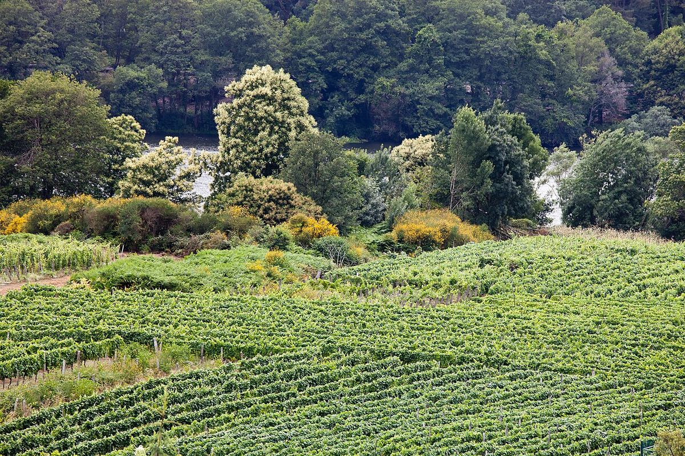

Ribeiro
Le Ribeiro, dans la province d'Ourense, est l'une des plus anciennes dénominations d'origine de Galice et d'Espagne. Ses vins, surtout des blancs de treixadura, étaient déjà exportés au Moyen Âge, et il conserve le vin doux traditionnel appelé Tostado.

Histoire
Le Ribeiro est l'une des zones viticoles de plus ancienne tradition de Galice. Au Moyen Âge, les monastères, parmi lesquels les abbayes cisterciennes de San Clodio et d'Oseira, développèrent le vignoble, et la ville de Ribadavia devint un important centre commercial. Les vins du Ribeiro étaient expédiés par mer vers d'autres ports européens, notamment en Angleterre, et jouirent d'une réputation notable. Après la crise provoquée par l'oïdium et le phylloxéra au XIXe siècle, de nombreuses vignes furent replantées avec des cépages productifs comme le palomino et la garnacha tintorera. Depuis la fin du XXe siècle, la zone a remis à l'honneur ses cépages autochtones. C'est l'une des plus anciennes dénominations d'origine d'Espagne.
Territoire et climat
L'appellation se situe dans l'ouest de la province d'Ourense, au confluent du Minho et de ses affluents l'Avia, l'Arnoia et le Barbantiño, autour de Ribadavia, Leiro, Castrelo de Miño et d'autres communes. Les vignes sont cultivées sur les coteaux et les terrasses des vallées, appelées localement socalcos. Le climat est de transition entre atlantique et continental : plus chaud et moins pluvieux que la côte galicienne, mais suffisamment humide, avec des étés doux à chauds et un écart thermique marqué entre le jour et la nuit pendant la maturation.
Sols
Dominent les sols d'origine granitique, sableux, acides et peu profonds, appelés xabre en Galice, ainsi que des zones de schiste et des dépôts alluviaux sur les terrasses proches des rivières.
Cépages et styles
La treixadura est le principal cépage blanc ; elle apporte des arômes de fruits mûrs, des notes florales et une bonne structure. Elle est généralement assemblée à d'autres cépages autochtones comme le torrontés, la loureira, le godello, l'albariño, le lado et le caíño blanco, ce qui fait du Ribeiro une terre d'assemblages. Parmi les rouges, on cultive le caíño tinto, le sousón, le brancellao, le ferrón et le mencía. La production se concentre sur des blancs frais et aromatiques, mais on élabore aussi des rouges légers et frais. Au cours des dernières décennies, de nombreux viticulteurs ont remplacé le palomino, encore présent dans de vieilles vignes, par ces cépages autochtones et ont remis en culture des parcelles de coteau abandonnées.
Le Tostado
Le Tostado est un vin doux traditionnel élaboré avec des raisins que l'on laisse passeriller après la vendange, souvent suspendus ou étalés dans des lieux secs et aérés, jusqu'à concentrer leurs sucres. Le moût, très dense, fermente lentement et le vin vieillit longuement avant d'être commercialisé. C'est une production confidentielle, mais profondément ancrée dans l'histoire de la région.